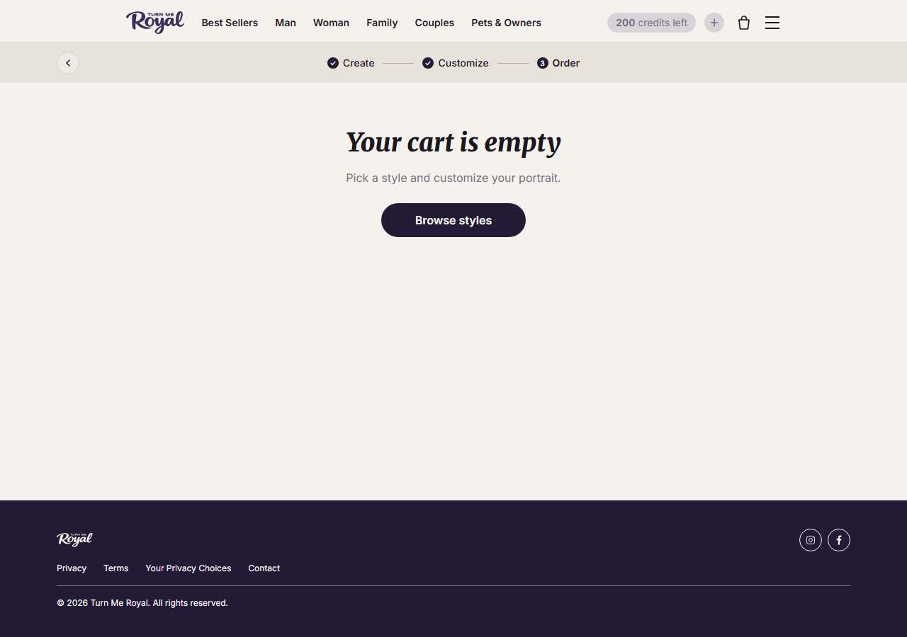

Turn Me Royal OBSERVAR
Copiar: O "upload com preview grátis e sem cadastro". Reduz o medo de comprar sem ver. Não copiar: Copiar o gerador próprio: é software, não é dropshipping.
01Produto campeão

produto campeão · 35 dias no ar no anúncio mais antigo
The Saloon (estilo de retrato real, sem preço fixo na PDP)
não obtidopreço só aparece depois do fluxo de criação
Catálogo: não obtido (storefront headless; fluxo de criação por estilo, sem products.json)
02Mídia paga completa
170
anúncios ativos
2 página(s) da Meta, contadas por page_id
observado · Biblioteca, 20/10/2026
332
anúncios no histórico
já criados, ativos ou não
observado
51,2%
sobrevivência
ativos ÷ histórico
calculado
64
anúncios no Google
consultado
observado · Google Ads Transparency
| Ritmo de criativo (amostra de busca por pet) | Valor | Leitura |
|---|---|---|
| Anúncios na amostra | 35 | contagem dos anúncios da loja que apareceram nas buscas de pet; a página tem mais |
| Criativos únicos | 10 | textos e títulos distintos |
| Duplicação | 3.5x | variação moderada |
| Anúncios novos por dia | 0,2 | janela da amostra de 170 dias, sem extrapolar rajada |
| Criativos novos por semana | 0.4 | únicos ÷ janela × 7 |
| Mais antigo ainda no ar | 174 dias | mediana de 22 dias |
| Formato | IMAGE 19, VIDEO 16 | mix da amostra |
Ranking de criativos vencedores (os mais longevos desta loja)
| Dias no ar | Formato | Título e texto | Variações | Fonte |
|---|---|---|---|---|
| 174 dias | IMAGE | Your family's wild west legend, painted forever. 🔥 Turn anyone you love, family, friends, kids, pets, into cowboys in a Western-style oil portrait.
Upload one | 1 variações | Biblioteca ↗ |
| 80 dias | IMAGE | The eternal portrait of your family's love ❤️ Turn your loved ones, and their pets, into legends, rendered exactly as they are.
Upload your favorite phot | 1 variações | Biblioteca ↗ |
| 43 dias | IMAGE | The eternal portrait of your family's love ❤️ Turn your loved ones, and their pets, into a timeless portrait, captured exactly as they are.
Upload your f | 1 variações | Biblioteca ↗ |
| 43 dias | IMAGE | The eternal portrait of your family's love ❤️ Turn your loved ones, and their pets, into a timeless portrait, captured exactly as they are.
Upload your f | 1 variações | Biblioteca ↗ |
| 43 dias | IMAGE | The eternal portrait of your family's love ❤️ Turn your loved ones, and their pets, into a timeless portrait, captured exactly as they are.
Upload your f | 1 variações | Biblioteca ↗ |
BenchmarkBenchmark de custo, categoria Pet Care (IRP Commerce, setembro/2026): CPM $10,42, CPC $0,67, CPA 8.83% da receita. CPM e CPC vêm de benchmarks públicos de e-commerce da Meta, não de pet.
MomentumMomentum da operação: estável. Metade dos anúncios foi criada nos últimos 22 dias e o mais antigo tem 174.
03Tráfego real (SimilarWeb · 10/2026)
119.1K
visitas por mês
SimilarWeb público
observado · SimilarWeb
41.32%
taxa de rejeição
visitas que saem sem clicar em nada
observado
4.98
páginas por visita
duração 00:03:11
observado
United States 92.26%
principal país
origem do tráfego
observado
Em resumoO SimilarWeb não separa pago de orgânico para lojas pequenas nesta coleta; o tráfego pago é inferido pela ausência de redes sociais e pela quantidade de anúncios.
04Faturamento mensal e investimento em mídia estimados
$281.260
central por mês
3.171 pedidos × ticket médio
calculado
$281.260
piso
sem preço visível: ticket do setor (75%)
calculado
$281.260
teto
ticket de $89 (75% do setor)
inferido
$24.835
mídia estimada por mês
8.83% da receita central
inferido
MétodoMétodo: 119.100 visitas × 2,66% de conversão (setor 2,13% × ajuste 1,25 pela rejeição) = 3.171 pedidos. Confiança: estimado incerto; o preço do produto só aparece depois do fluxo de criação: o ticket usado é só o do setor (75%), sem piso próprio da loja. Nunca é receita contábil.
05Páginas capturadas
Home

PDP · The Saloon (estilo de retrato real, sem
Carrinho

CapturaCapturas desktop e celular feitas em 20/10/2026 com Playwright headless. O carrinho foi aberto depois de clicar no botão principal da PDP, sem finalizar compra.
06Anatomia do vencedor
| Elemento | Decodificação |
|---|---|
| Big idea | O retrato eterno do amor da sua família, em estilo de pintura clássica. |
| Mecanismo | Gerador por créditos: envia a foto, vê o preview grátis, depois pede a impressão. |
| Gancho | Título "The eternal portrait of your family's love"; 16 de 35 anúncios da amostra são vídeo, o resto imagem. |
| Presell | nenhum |
| Objeção principal | Vai ficar bom? Resposta: preview grátis, sem cadastro. |
07Catálogo, stack e prova
- Plataforma
- Next.js (loja própria com gerador de retrato por créditos)
- Apps e stack
- Klaviyo, Loox, Hotjar, Bold, GTM
- Pixel da Meta
- não obtidonão identificado no HTML
- Catálogo
- não obtido (storefront headless; fluxo de criação por estilo, sem products.json)
- Redes sociais
- Instagram com 86 mil seguidores (alegação do site)
- Prazo de envio e frete
- frete grátis em canvas; pedidos físicos saem em 7 a 11 dias úteis
- Garantia
- "Museum-worthy quality, guaranteed"
- BNPL (parcelamento)
- nenhum identificado
- Reviews
- alegação "12.258+ reviews" na home, não verificada pelo app
- Páginas institucionais
- rodapé com Shipping, Refund, Privacy e Terms (conferido na home)
Alegação não verificadaChecagem de alegações: a home diz "600,000+ portraits created" e "12,258+ reviews". O domínio existe desde 2020, então a idade não contradiz, mas os números não foram verificados em nenhum app de reviews.
LeituraO que copiar: O "upload com preview grátis e sem cadastro". Reduz o medo de comprar sem ver. O que evitar: Copiar o gerador próprio: é software, não é dropshipping.
08Dados não obtidos
| Dado | Motivo | Método tentado |
|---|---|---|
| Preço do produto campeão | o preço aparece só depois do fluxo de criação | leitura da PDP, carrinho vazio |
| Catálogo | sem products.json | sitemap, collections |
| Reviews verificados | contagem só em texto de home | reviews.mjs |
09Veredito
MARCA
modelo
dropship puro, dropship de marca ou marca
inferido
OBSERVAR
veredito
referência, não clone
inferido
NÍVEL AVANÇADO
nível de execução
soma 4 de 12
calculado
CONSTRUÍVEL
defensabilidade
dá para construir marca
inferido
| Eixo do scorecard | Pontos | Leitura |
|---|---|---|
| Sourcing simples | 0 de 2 | não pontua |
| Ticket fecha sem escada complexa | 1 de 2 | pontua em parte |
| Criativo simples de produzir | 1 de 2 | pontua em parte |
| Mecanismo com urgência | 1 de 2 | pontua em parte |
| Investimento de entrada baixo | 0 de 2 | não pontua |
| Sem dependência de autoridade | 1 de 2 | pontua em parte |
| Total | 4 de 12 | nível avançado: é etiqueta de perfil, não nota de corte |
Fontede onde veio
Mídia, tráfego, capturas e catálogo desta ficha.observado
Observaçãoo que foi visto
170 anúncios ativos, 51,2% de sobrevivência, marca, Next.js (loja própria com gerador de retrato por créditos).observado
Interpretaçãoo que isso sugere
Serve para aprender ângulo e política, não para copiar a operação.inferido
Decisãoo que a régua diz
OBSERVAR, nível AVANÇADO, CONSTRUÍVEL.calculado
Próxima açãoo que fazer agora
Pegar só o que está em "O que copiar".recomendado